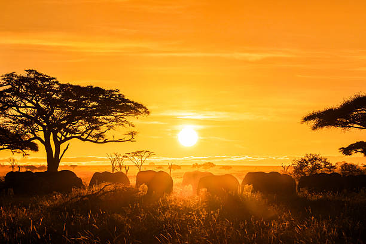
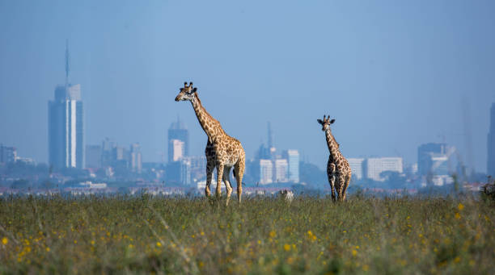
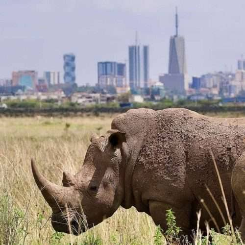
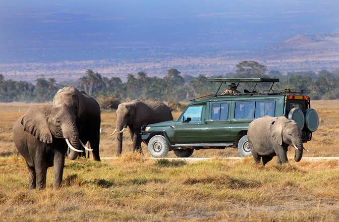
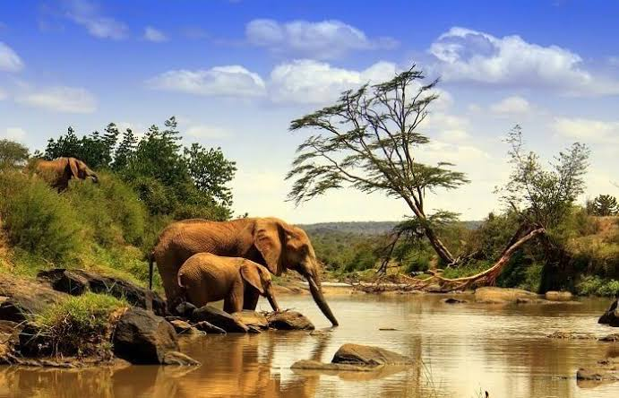
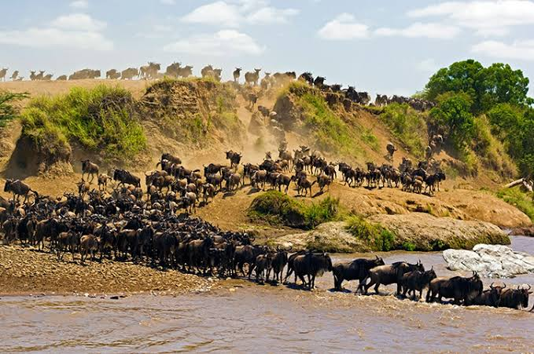

Fire island has very good experiences.The Scene is endless distinctive golden sunsets.
A truly unique visual juxtaposition where wild giraffes, black rhinos, and lions roam open grass plains right under the glittering skyline.
Famous for offering the most iconic views. Twende Kenya




I would really recommend Fire Island. I had such an adventure, beautiful views and such a good time. definitely visiting again!
Visit Fire Island Website Back to top